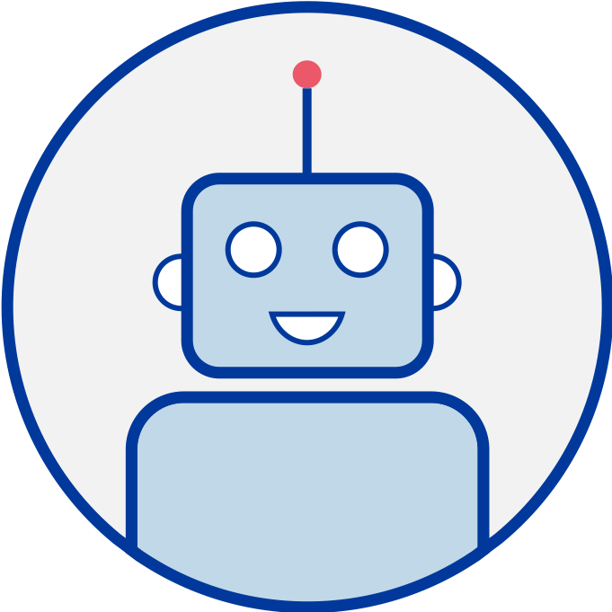

ChefBot

This page designed to give a local preview of chefbot. For more details see my website. Click on the blue chat icon
in the bottom right hand corner to use the bot. If that hasn't appeared you will need to run python chefbot.py local. See the Readme for more installation
details.